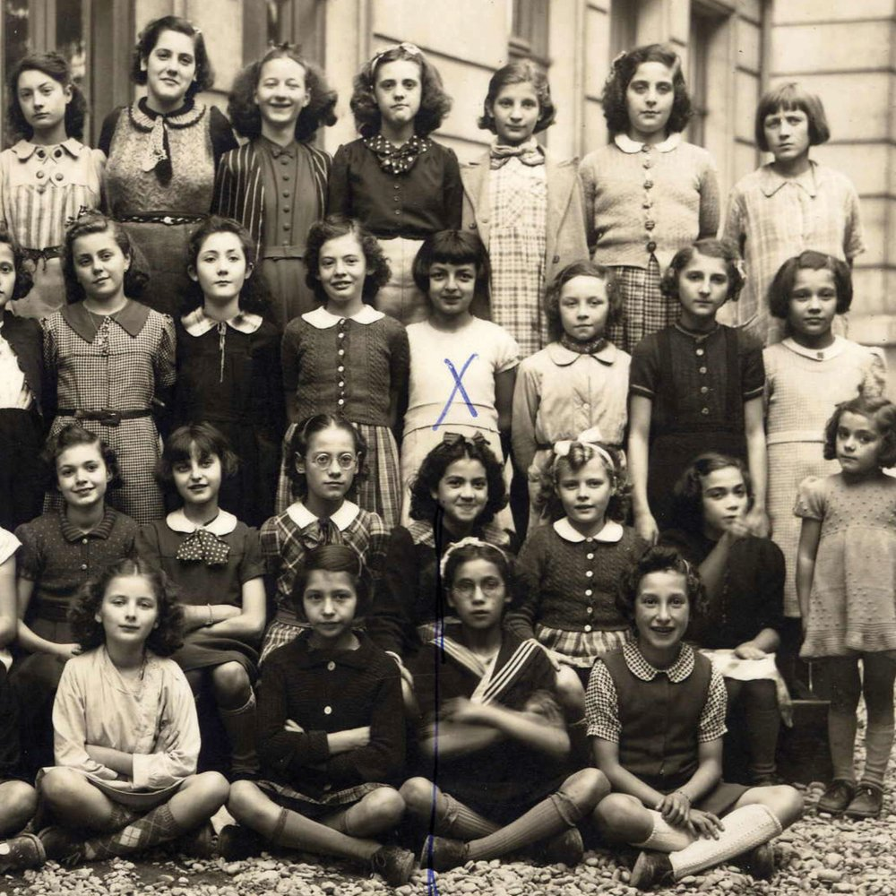

Portrait d’archive
Enfants Calef
Léon CALEF
Nom : CALEF
Prénom(s) : Léon
Date naissance : 21/07/1932
Âge (ans) : 11
Lieu naissance : Lyon
Pays ou département : Rhône
Lieu rassemblement : Lyon
Dernière adresse : 1, quai Pêcherie
Ville : Lyon
Code postal : 69002
N° Convoi : 63
Date déportation : 17/12/1943
Informations diverses : Léon est né à Lyon en 1932. Il est le fils de Suzanne Calef née Corri (17-Dec-1897, Izmir, Turquie), couturière et de Jules Giulio Calef (08/12/1884, İzmir) et le frère de Rita (née en 1930). La famille comprend 3 autres enfants, Gabriel (né en 1921), Elsy (née en 1922) et Odette (née en 1924). Il était scolarisée à Ecole Chenavard, (cours élémentaire en décembre 1940 jusqu’à juillet 1940; registre d’appel journalier; cotre 1529WP2; aujourd’hui Ecole Claude Lévi-Strauss 37bis Rue Paul Chenavard, 69001) année 1939-1940; à l’école Messonier (place Messonier, 69001) et école de la rue Tourret (69001, Entrée 1940; Sortie octobre 1941; mention : disparu en Allemagne; aujourd’hui Ecole Doisneau, 5 Rue Sergent Blandan, 69001). En 1943, la famille se réfugie à Nice (Cahier de Rita) mais retourne à Lyon en septembre 1943 où elle est arrêtée le 15 ou 17/11/1943 à Lyon. Léon est déporté à Auschwitz avec sa sœur Rita, 13 ans, sa mère Suzanne, 46 ans, et son père Jules, Raphaël (Giulio), 59 ans, par le convoi 63 du 17/12/1943.
Leur oncle Raphaël Lévy et leur tante Lucie Lévy (née Calef) habitant au 1 rue Constantine à Lyon 1er seront arrêtés et déportés par le convoi 77 du 31/07/1944.
Leur frère Gaby (père de Cathy Calef) ainsi que leurs grandes sœurs ont été cachés et n'ont pas été déportés.
En novembre 1942, la famille se disperse: les deux grandes sœurs sont cachées dans des familles et les parents et les trois autres enfants trouvent refuge dans un hôtel rue Verdi à Nice. En septembre 1943, les parents et les deux jeunes enfants rentrent à Lyon. Gabriel (Gaby) est recueilli sous une fausse identité à l'Institut Don Bosco à Nice, dirigé par le père Vincent Siméoni, grâce à la complicité d'un boulanger de Lyon. En décembre 1943, Gabriel reçoit un télégramme du boulanger à Lyon l'informant que toute la famille avait été invitée par tante Marguerite «à passer l'hiver avec elle». "Tante Marguerite" était le nom de code pour la Gestapo. Cette nouvelle signifiaient qu'il avait perdu toute sa famille (Source: AJPN).
La famille Calef a en effet été arrêtée à Lyon, envoyée à la prison Montuc, puis au camp de transit de Drancy, d'où ils ont été déportés à Auschwitz par le convoi n° 63 le 17 décembre 1943 : Suzanne, le jour anniversaire de ses 44 ans, Jules, 59 ans, Rita, 13 ans et Léon, 12 ans. Leur frère Gaby (père de Cathy Calef, qui conserve le cahier de Rita) a lui été caché dans une famille à Nice et n'a pas été déporté.
Calef (Léon), né le 21 juillet 1931 à Lyon (Rhône), décédé le 22 décembre 1943 à Auschwitz (Pologne). JO
Calef (Rita), née le 14 avril 1930 à Smyrne (Turquie), décédée le 22 décembre 1943 à Auschwitz (Pologne). Calef (Jules, Raphaël), né le 8 décembre 1884 à Smyrne (Turquie), décédé le 22 décembre 1943 à Auschwitz (Pologne). Calef, née Corry (Suzanne) le 17 décembre 1897 à Smyrne (Turquie), décédée le 22 décembre 1943 à Auschwitz (Pologne).
Lieu de déportation : Auschwitz
Lieu de départ : Drancy
Nombre total de déporté·e·s du convoi : 850
Gazé·e·s à l'arrivée : 505 (59,4 %)
Survivant·e·s en 1945 : 31 (3,6 %)
Rita CALEF
Nom : CALEF
Prénom(s) : Rita
Date naissance : 14/04/1930
Âge (ans) : 13
Lieu naissance : Smyrne
Pays ou département : Turquie
Lieu rassemblement : Lyon
Dernière adresse : 1, quai Pêcherie
Ville : Lyon
Code postal : 69002
N° Convoi : 63
Date déportation : 17/12/1943
Informations diverses : Rita est née à Smyrne (Izmir) en Turquie. Elle la fille de Jules, (08/12/1884) et de Suzanne née Cori (17/12/1897), commerçants. La famille comprend 3 autres enfants, Gabriel (né en 1921), Elsy (Elsie) née le 05/12/1922) et Odette (née le 24/01/1924). Rita était scolarisée à l’Ecole Messonier (8, rue du Plâtre, 69001 Lyon) avec ses sœurs Elsie et Odette. En classe de Mme Marie Guillot (née Marion) classe de CM 2ème année. Puis en classe avec Mme Luce Beauverd-Bonaudo, camarade de Rita à l'école de la rue Tourret (aujourd’hui Ecole Robert Doisneau, 1 r Sergent Blandan 69001) de 1940 à 1941. Luce BEAUVERD-BONAUDO est décédé le 9 décembre 2021 à 91 ans. Rita était l’amie de Raymonde Zyzeck-Rosenzweig. Sa mère tenait un magasin de haute couture couture (famille de Henri Calef, cinéaste). Sortie école juillet 1941; mention déportée. En 1943, la famille se réfugie à Nice. Rita tiendra son Cahier intime dans lequel elle écrit des poèmes et fait état de ses échanges épistolaires avec ces camarade de classe de Lyon. La famille retourne à Lyon en septembre 1943 où elle est arrêtée le 15 ou 17/11/1943 à Lyon. Rita est déportée avec son frère Léon, 12 ans, sa mère Suzanne, 46 ans, et son père Jules, Raphaël (Giulio), 59 ans, par le convoi 63 du 17/12/1943.
Leur oncle Raphaël Lévy (21/02/1874, Izmir) et leur tante Lucie Lévy (née Calef) (30/10/1883, Izmir) habitant au 1 rue Constantine à Lyon 1er seront arrêtés et déportés par le convoi 77 du 31/07/1944.
Leur frère Gaby (père de Cathy Calef) ainsi que leurs grandes sœurs ont été cachés et n'ont pas été déportés.
Calef (Rita), née le 14 avril 1930 à Smyrne (Turquie), décédée le 22 décembre 1943 à Auschwitz (Pologne). JO
Calef (Léon), né le 21 juillet 1931 à Lyon (Rhône), décédé le 22 décembre 1943 à Auschwitz (Pologne). Calef (Jules, Raphaël), né le 8 décembre 1884 à Smyrne (Turquie), décédé le 22 décembre 1943 à Auschwitz (Pologne). Calef, née Corry (Suzanne) le 17 décembre 1897 à Smyrne (Turquie), décédée le 22 décembre 1943 à Auschwitz (Pologne).
En novembre 1942, la famille se disperse: les deux grandes sœurs sont cachées dans des familles et les parents et les trois autres enfants trouvent refuge dans un hôtel rue Verdi à Nice. En septembre 1943, les parents et les deux jeunes enfants rentrent à Lyon. Gabriel (Gaby) est recueilli sous une fausse identité à l'Institut Don Bosco à Nice, dirigé par le père Vincent Siméoni, grâce à la complicité d'un boulanger de Lyon. En décembre 1943, Gabriel reçoit un télégramme du boulanger à Lyon l'informant que toute la famille avait été invitée par tante Marguerite «à passer l'hiver avec elle». "Tante Marguerite" était le nom de code pour la Gestapo. Cette nouvelle signifiaient qu'il avait perdu toute sa famille (Source: AJPN).
La famille Calef a en effet été arrêtée à Lyon, envoyée à la prison Montuc, puis au camp de transit de Drancy, d'où ils ont été déportés à Auschwitz par le convoi n° 63 le 17 décembre 1943 : Suzanne, le jour anniversaire de ses 44 ans, Jules, 59 ans, Rita, 13 ans et Léon, 12 ans. Leur frère Gaby (père de Cathy Calef, qui conserve le cahier de Rita) a lui été caché dans une famille à Nice et n'a pas été déporté.
Lieu de déportation : Auschwitz
Lieu de départ : Drancy
Nombre total de déporté·e·s du convoi : 850
Gazé·e·s à l'arrivée : 505 (59,4 %)
Survivant·e·s en 1945 : 31 (3,6 %)